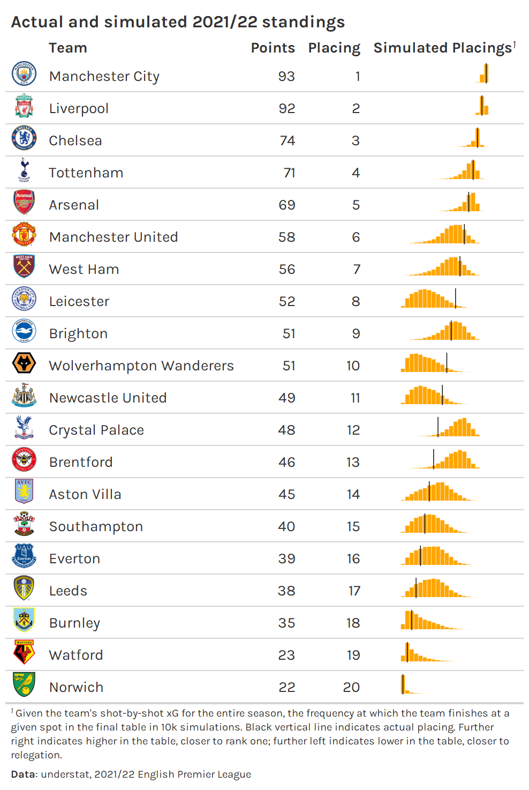

Introduction
I’ll be picking up where I left off in my last post, so stop everything that you’re doing and go read that if you haven’t already. In this post we’ll do two things:
We’ll compare how well season-level expected goal difference (xGD), season-level xPts, and aggregated match-level xPts predict season-long points for a given team.
We’ll use the match-level probabilites to answer the questions “Which teams had the most unlikely placings in the table given the quality of all their shots across the season?” and “How unlikely were such placings?”
Analysis
1. Predicting season-long points
With season-long xPts and xGD
We start with the all_raw_understat_xpts_by_match
variable from the prior post, adding the opponent’s expected goals to
create a column for expected goal difference (xgd).
all_raw_understat_xpts_by_match_with_opponent <- all_raw_understat_xpts_by_match |>
inner_join(
all_understat_shots |> distinct(match_id, season, date, team, opponent),
by = c('season', 'date', 'team')
)
## we've already determined that the raw_xpts (provided directly by understat)
## is close to our calculated xpts, so we'll just use the raw_xpts.
all_raw_understat_xpts_xgd_by_match <- all_raw_understat_xpts_by_match_with_opponent |>
select(match_id, season, date, team, opponent, pts, xpts = raw_xpts, xg) |>
inner_join(
all_raw_understat_xpts_by_match_with_opponent |>
select(match_id, opponent = team, opponent_xg = xg),
by = c('match_id', 'opponent')
) |>
mutate(xgd = xg - opponent_xg)
Next, we aggregate up to the season-level.
all_raw_understat_xpts_xgd_by_season <- all_raw_understat_xpts_xgd_by_match |>
group_by(season, team) |>
summarize(across(c(pts, xpts, xgd), sum)) |>
ungroup() |>
group_by(season) |>
mutate(xrank = row_number(desc(xpts))) |>
ungroup() |>
arrange(season, desc(pts), team)
Finally, we compute RMSE and R squared, like we did in the last post.
diagnose_season_feature <- function(df, col) {
fit <- lm(df$pts ~ df[[col]])
tibble(
rmse = compute_rmse(df$pts, predict(fit)),
r2 = summary(fit)$r.squared
)
}
c('xgd', 'xpts') |>
set_names() |>
map_dfr(
~diagnose_season_feature(all_raw_understat_xpts_xgd_by_season, .x),
.id = 'feature'
)
#> # A tibble: 2 × 3
#> feature rmse r2
#> <chr> <dbl> <dbl>
#> 1 xgd 7.31 0.831
#> 2 xpts 7.19 0.837
As we should expect, a model using season-long xPts to predict final points outperforms one using season-long xGD as a feature, although maybe the difference between the two is smaller than we might have expected.
With match-level outcome probabilities
First, we use the full understat shot data set and the custom functions from the prior post to calculate xPts by match.
all_understat_xpts_by_match <- all_understat_shots |>
calculate_permuted_xg() |>
summarize_permuted_xg_by_match()
Then, before we move on, we need to handle an edge case: some teams do not have any shots in some matches.1 We choose to specify that that a probability of 0.9 to losing and 0.1 to drawing for such teams.2
init_all_understat_probs_by_match <- all_understat_xpts_by_match |>
select(match_id, season, team, opponent, is_home, starts_with('prob')) |>
rename_with(~str_remove(.x, '^prob_'), starts_with('prob')) |>
pivot_longer(
c(win, lose, draw),
names_to = 'result',
values_to = 'prob'
)
understat_guaranteed_wins <- init_all_understat_probs_by_match |>
group_by(team, match_id) |>
filter(all(prob == 1)) |>
ungroup()
understat_guaranteed_losses <- init_all_understat_probs_by_match |>
group_by(team, match_id) |>
filter(all(prob == 0)) |>
ungroup()
understat_probs_by_match <- init_all_understat_probs_by_match |>
anti_join(
understat_guaranteed_losses |> select(team, match_id, result),
by = c('team', 'match_id', 'result')
) |>
bind_rows(
understat_guaranteed_wins |>
mutate(
prob = case_when(
result == 'win' ~ 0.9,
result == 'lose' ~ 0,
result == 'draw' ~ 0.1
)
)
) |>
bind_rows(
understat_guaranteed_losses |>
mutate(
prob = case_when(
result == 'win' ~ 0,
result == 'lose' ~ 0.9,
result == 'draw' ~ 0.1
)
)
) |>
arrange(season, team, match_id)
Next, the fun part: simulating match outcomes using the xG-implied match outcome probabilities. This is computationally intense, so we parallelize the calculation.
library(parallel)
library(future)
library(furrr)
simulate_season_xpts <- function(...) {
sim_home_pts_by_match <- understat_probs_by_match |>
filter(is_home) |>
group_by(team, season, match_id) |>
slice_sample(n = 1, weight_by = prob) |>
ungroup() |>
mutate(
pts = case_when(
result == 'win' ~ 3L,
result == 'lose' ~ 0L,
TRUE ~ 1L
)
)
sim_pts_by_match <- bind_rows(
sim_home_pts_by_match |> select(match_id, season, team, pts),
sim_home_pts_by_match |>
transmute(
match_id,
season,
team = opponent,
pts = case_when(
result == 'win' ~ 0L,
result == 'lose' ~ 3L,
TRUE ~ 1L
)
)
) |>
group_by(season, team) |>
summarize(across(pts, sum)) |>
ungroup()
sim_pts_by_match |>
group_by(season, team) |>
summarize(across(pts, sum)) |>
ungroup() |>
group_by(season) |>
mutate(rank = row_number(desc(pts))) |>
ungroup() |>
arrange(season, rank)
}
n_cores <- detectCores()
cores_for_parallel <- ceiling(n_cores * 0.5)
plan(
multisession,
workers = cores_for_parallel
)
set.seed(42)
n_sims <- 10000
understat_sim_pts_by_season <- set_names(1:n_sims) |>
future_map_dfr(
simulate_season_xpts,
.id = 'sim_idx',
.options = furrr_options(seed = 42)
)
## back to normal processing
plan(sequential)
Next, we aggregate the season-long points across simulations, calculating the relative proportion of simulations in which a given team ends up at a given rank.
Finally, we calculate the weighted average of expected points that a team ends up with, and run the same regression that we ran earlier with season-long xPts and xGD.
understat_sim_placings_agg <- understat_sim_placings |>
group_by(season, team) |>
summarize(xpts = sum(xpts * prop)) |>
ungroup() |>
select(season, team, xpts) |>
inner_join(
all_raw_understat_xpts_xgd_by_season |> select(season, team, pts),
by = c('season', 'team')
) |>
arrange(season, desc(xpts))
diagnose_season_feature(understat_sim_placings_agg, 'xpts')
#> # A tibble: 1 × 2
#> rmse r2
#> <dbl> <dbl>
#> 1 7.14 0.839
Interestingly, the RMSE and R squared values are almost identical to those for the season-long xPts. Perhaps this is not too surprising—match-level outcome probabilities simulated and averaged to arrive at a singular estimate of season-long xPts should give us something very close to just computing season-long xPts directly.
While the null result may be discouraging, the simulations are useful in and of themselves. They can be used to understand the distribution of outcomes for team in a given season, as seen in the table below.3

We can see that Leicester, Wolves, and Newcastle all placed at the uppper end of their simulated placings, indicating that they over-achieved relative to expectation; on the other hand, Crystal Palace, Brentford, and Leeds placed on the lower end of the distribution of placings, indicating that they under-achieved.
In fact, we can go beyond simple observational judgement of whether teams over- and under-achieved—we can use the relative proportion of simulations where a team ends up at a given placing (or “rank”) in the standings to quantify just how unexpected actual end-of-season placings were.
2. Identifying un-expected placings
First, we need to step back and retrieve data on the actual placings.
We could theoretically calculate this from the shot data we already
have. However, the logic for handling own goals is a little complicated.
We’re probably better off using
worldfootballR::understat_league_match_results()—which
returns goals at the match-level—to calculate the table. 4
match_results <- 2014:2021 |>
map_dfr(~understat_league_match_results('EPL', .x)) |>
as_tibble()
init_table <- match_results |>
transmute(
match_id,
across(season, ~str_replace(.x, '\\/20', '/')),
date = strptime(datetime, '%Y-%m-%d %H:%M:%S', tz = 'UTC') |> date(),
home_team,
home_goals,
away_team,
away_goals
)
table <- bind_rows(
init_table |>
mutate(is_home = TRUE) |>
rename_home_away_teams() |>
select(season, team, opponent, goals = home_goals, opponent_goals = away_goals),
init_table |>
mutate(is_home = FALSE) |>
rename_home_away_teams() |>
select(season, team, opponent, goals = away_goals,opponent_goals = home_goals)
) |>
mutate(
pts = case_when(
goals > opponent_goals ~ 3L,
goals < opponent_goals ~ 0L,
TRUE ~ 1L
)
) |>
group_by(season, team) |>
summarize(across(c(goals, opponent_goals, pts), sum)) |>
ungroup() |>
mutate(gd = goals - opponent_goals) |>
arrange(season, desc(pts), desc(gd)) |>
group_by(season) |>
mutate(rank = row_number(desc(pts))) |>
ungroup() |>
arrange(season, rank)
Next, we join the table of end-of-season placements
(actual_rank) to the simulation results that describe the
frequency with which a given team places at a given rank
(xrank).
understat_sim_placings_with_actual_ranks <- understat_sim_placings |>
inner_join(
table |> select(season, team, actual_pts = pts, actual_rank = rank),
by = c('season', 'team')
) |>
inner_join(
all_raw_understat_xpts_xgd_by_season |>
select(season, team, actual_xpts = xpts, xgd),
by = c('season', 'team')
)
Finally, to identify over-achieving teams, we find the teams that had the lowest cumulative probability of placing at their actual placing or better; and to identify under-achieving teams, we find the teams with the lowest cumulative probability of placing at their actual placing or worse.

This table certainly passes the eye test. Brighton’s sixteenth place finish in the 2020/21 season was discussed ad nauseum in the analytics sphere. Brighton under-performed historically given their massively positive xGD.
On the other end of the spectrum, it’s not hyperbole to say that Manchester United’s second place finish in the 2017/18 season was an over-achievement. Although they ended up with the third best goal differential that season, they were closely followed by several teams. And their xGD was sixth in the league that season.
Comparison with a simpler approach
Notably, we could get somewhat similar results by simply looking at the largest residuals of a model that regresses the actual final table placing on just xGD, which is how most people tend to think of “unexpected placings”.
The table below shows the top five over- and under-achieving teams according to our regression explaining season-ending placing with season-ending xGD. Three of the top five over- and under-performing teams appear in the respective top fives according to the ranks from the simulations of match probabilities shown before.
We can also look at this from the opposite perspective. Where do the top five over- and under-achievers according to our simulations with match outcome probabilities fall among the season-ending xGD ranks for unlikelihood?

Outside of the the three team-season pairs appearing in the both of the top five over- and under-achievers that we already saw before, one team-season pair is not too far off from the top five—the 2017/18 Manchester United squad ranked as the sixth biggest over-performers by the season-long xGD regression.5 However, the other over-perfomer, 2019/20 Newcastle, and the two remaining under-performers, 2021/22 Crystal Palace and 2021/22 Brentford, have somewhat large ranking discrepancies. So yes, the two methods can lead to somewhat similar results in some cases, but there is some observational evidence to suggest that there are non-trivial differences in other cases.
In fact, there are some big differences between the two methods once we look outside the top five or so biggest over- and under- achievers. For example, in terms of over-achieving, Arsenal’s fifth place finish 2018/19 season is given just a 8.9% chance of occurring given their season-long xGD, ranking them as the 16th biggest over-performer (among 80 team-season pairs considered to have over-achieved from 2014/15).6 On the other hand, the match-level simulation approach marks the likelihood of them finishing fourth as 31.9% (38th of 80). The season-long xGD model essentially sees that they finished with an xGD of 7.5—less than any other fifth place finisher from 2014/15 - 2021/22—and penalizes them, while the match-level approach contextualizes them among their competition more robustly.
As another example, Manchester United’s under-achieving sixth place finish in the 2016/17 is given a fairly reasonable 37.3% chance (66th of 80 under-achieving teams) of occurring given their season-long 25.9 xGD, most for any sixth place team in the data set. On the other hand, the match-level simulation approach sees their sixth place finish as more unlikely, at just a 15.4% probability (15th of 80). While one might have their own opinion regarding which approach seems more “correct”, I’d say that likelihoods from the simulation approach seem more appropriate for extreme examples such as this one and the 2018/19 Arsenal example
Overall, both approaches seem reasonable to use to answer the question “Which teams had the most unlikely placings in the table given the quality of all their shots across the season?” But the approach based on simulations using match probabilities seems more appropriate to use to quantify exactly how unlikely a team’s final placing was. While the simpler regression approach can also be used to quantify likelihood, it is more brittle, dependent on statistical assumptions. Additionally, while it contextualizes a team’s xGD with historical xGD, it does not contextualize a team’s xGD among the other teams in the league, meaning that it does not do a good job with capturing likelihood when there are strong xGD over- and under-performances among a set of teams in a given season.
Conclusion
While aggregating match-level outcome probabilities to try to predict season-ending points does no better than more direct approaches with season-long xGD or xPts, simulating seasons using match-level outcome probabilities can be used in a perhaps more interesting way—to quantify just how unlikely a team’s placement in the table is, given xG for all of their shots across the season.
Theoretically, there is an even more extreme case: when both teams do not have any shots in a match. This does not occur in the data set, so we do not need to correct for this.↩︎
These choices are purely based on intuition. We could be more rigorous about this, but I think these defaults should be fine. It’s wrong to assign a probability of 1 for losing, and a naive split of 0.5 and 0.5 for losing and drawing is surely too optimistic in favor of drawing.↩︎
Table code is not shown since it’s not particularly instructive.↩︎
Maybe even more simply, we could use
worldfootballR::fb_season_team_stats(..., stat_type = 'league_table'), although we’d need to add a column for team names for FBref to our team mapping to corroborate team names.↩︎Note that, given the 160 team-season pairs in the data set, we should expect that 80 teams each are ranked as over-performing and under-performing. No team will be labeled as performing exactly as expected, unless they happen to have only one possible placing in the simulation approach, or a residual of exactly 0 in the regression approach.↩︎
To quantify the likelihood of a team’s placing with the simple regression, we convert the standard residual of the regression to a tail probability.↩︎